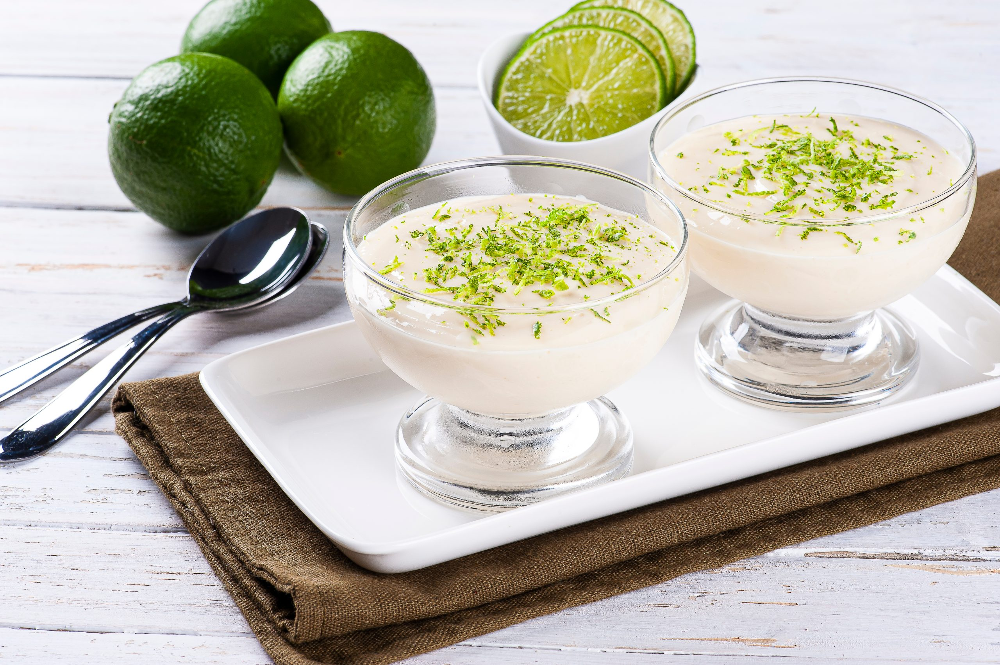

MOUSSE DE LIMÃO

Ingredientes
1 lata ou caixinha de leite condensado (aprox. 395 g)
1 caixinha de creme de leite (aprox. 200 g)
½ xícara (120 ml) de suco de limão espremido na hora
Raspas de limão para decorar